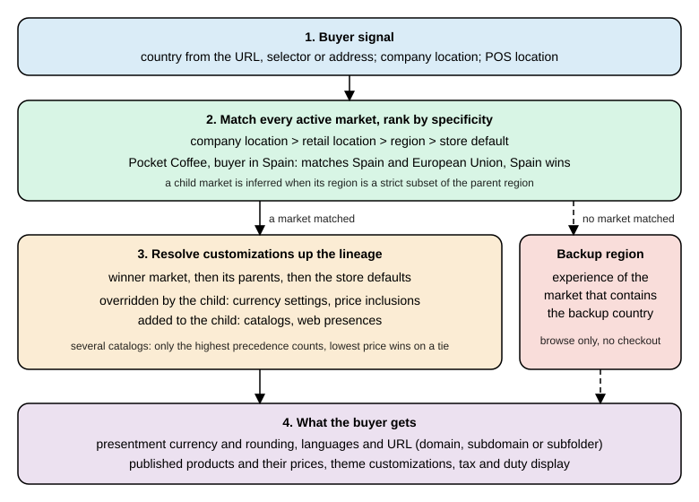

Markets and Internationalization
|
This content was generated with the assistance of AI and should be verified against the official documentation before being relied on in production. |
This page was written against the Shopify Admin and Storefront GraphQL API version 2026-10 (latest stable since 2026-10-01; 2027-01 is the release candidate), Shopify CLI 5.0.0, Hydrogen 2026.10 and Theme Check 3.31.0, and it was checked on 2026-10-27. It explains how a Shopify store sells in several countries, currencies and languages: what a market is, how the platform decides which market a buyer belongs to, how catalogs and price lists decide products and prices, how currencies and exchange rates work, how translated content is stored and read, how domains and subfolders give each market its own URLs, and how themes, headless storefronts and apps stay in the buyer’s market. Some customizations depend on the plan, as the plan table below shows; Shopify Plus adds automatic country detection for visitors.
The running example is Pocket Coffee, the small specialty-coffee shop used across this section. It sells in Spanish
(default, EUR) and English, ships inside the European Union, and opens a United States market priced in USD. Three
markets are used throughout: European Union (27 countries, EUR), Spain (a child market of the European Union with its own
web presence) and United States (USD, subfolder /en-us). The backup region is Spain. Prices, SKUs and
languages follow the shop specification: Spanish is the primary locale, English is the second locale, the 250 g beans
cost 8.90 EUR and the 1 kg bag 29.90 EUR, and Ethiopia adds 1.00 EUR per 250 g.
Everything that can run without a store was run: the GraphQL documents and their variables were validated against the
downloaded 2026-10 Admin and Storefront schemas, a small theme was checked with Theme Check 3.31.0, and the headless
market resolver and the price arithmetic were executed with Node.js. Nothing was executed against a Shopify store,
because that needs an account and credentials, which this documentation never uses. The final section lists exactly
what ran and what did not. Examples that call a live store show placeholders such as ${SHOPIFY_STORE_DOMAIN} and
${SHOPIFY_ACCESS_TOKEN} and no response bodies.
What Shopify Markets is
A market is a group of buyers that a merchant targets with one buying experience. Markets are no longer defined by geography alone: each market is defined by conditions that decide which buyers match it, and a merchant attaches customizations that decide what those buyers see. The vocabulary below is the one the APIs use.
| Term | Meaning |
|---|---|
Market |
A group of one or more regions, company locations, retail locations or sales channels. |
Condition |
An attribute that qualifies a buyer for a market: the region the buyer is in, the company location the buyer purchases for, the retail (POS) location, or the sales channel. A market can hold several conditions of the same type, for example several countries. |
Customization |
What the market changes compared with the store defaults. There are four in the Markets API:
|
Region market |
A market made of countries (and, for some conditions, subdivisions). Only one market with the same set of regions can be active at a time. |
Company location market |
Targets B2B buyers of specific company locations, or all company locations in a region (a wildcard). |
Location market |
Targets point-of-sale (retail) buyers of specific POS locations, or all retail locations in a region. |
Channel market |
A market scoped to a sales channel connection. Merchants use it for channel-specific availability, pricing or currency in a product feed. Web presence, domains and discounts cannot be configured for channel markets. |
Submarket (child market) |
A market that sits inside another market and inherits its customizations. A parent-child relationship is inferred from the conditions; it is not declared. |
Catalog |
A set of products (a publication) and optional custom prices (a price list) published to a context such as a market or a B2B company location. |
Web presence |
The URL structure of a market: a domain, a subdomain or a subfolder, together with a default locale and alternate
locales. |
Backup region |
A store setting that points to a country inside an active market. It decides the experience of buyers who match no active market. It is not a market. |
Source: Shopify developer docs: About Shopify Markets, About the Markets API and Shopify Help Center: Overview of markets features and concepts
Markets work the same way for stores using Shopify Markets, Managed Markets and Global-E’s native integration with Shopify checkout, unless a guide says otherwise. The Admin API objects and mutations in this page apply to all of them.
Plans and what depends on them
The help center and the developer docs attach a few plan conditions to Markets features. They are collected here because they change what an app or a theme can rely on.
| Feature | Condition | Source |
|---|---|---|
Automatic country detection (geolocation selects the most relevant enabled country) |
Shopify Plus |
Developer docs, Markets in themes |
B2B markets and catalogs |
B2B capabilities of the plan; on Basic, Grow and Advanced up to 3 active catalogs across all B2B markets |
Help Center, markets overview |
Customizing catalogs for retail markets |
Shopify POS Pro or Plus |
Help Center, markets overview |
Business entities per market |
Plus |
Help Center, markets overview |
Market-specific theme content in the primary locale |
Only shops whose plan includes market-specific theme customization render it; translations into other locales render on every plan |
Developer docs, Markets in themes |
Sub-region markets (states and provinces) |
Early access at the time of checking |
Help Center, markets overview |
All local-currency features |
Shopify Payments with one-page checkout; other gateways have restrictions |
Help Center, pricing in local currencies |
Market-driven shipping |
Feature preview since 2026-07-01; the merchant-owned delivery profile APIs are deprecated for it |
Shopify developer changelog |
Creating markets with the Admin API
The Admin GraphQL API manages markets with marketCreate, marketUpdate and marketDelete, and reads them with the
markets and market queries. The mutation input is MarketCreateInput. In version 2026-10 it has these fields:
name (required), handle, conditions, catalogs, status, webPresences, currencySettings,
priceInclusions, discounts, delivery, returnPolicyProfileId and makeDuplicateUniqueMarketsDraft. Every
mutation returns userErrors with a field, a code and a message; always request them, because validation
failures do not raise a GraphQL error.
The conditions input is MarketConditionsInput, with four optional parts:
| Part | Fields |
|---|---|
|
|
|
|
|
|
|
|
Wildcards use applicationLevel: ALL. They include every company location or every retail location of a geography, and
new locations that match are added automatically. A maximum of 100 wildcard markets is enforced for each shop,
regardless of the market type.
The three Pocket Coffee markets are created with the same document and three variables files. The European Union market lists the 27 member states, Spain lists one country, and United States is created as a draft so that nothing is public until its catalog and web presence exist. The Spain market is a strict subset of the European Union market, so Shopify infers that European Union is a parent of Spain.
mutation CreateMarket($input: MarketCreateInput!) {
marketCreate(input: $input) {
market {
id
name
handle
status
type
conditions {
conditionTypes
regionsCondition {
applicationLevel
regions(first: 30) {
nodes {
id
name
... on MarketRegionCountry {
code
}
}
}
}
}
}
userErrors {
field
code
message
}
}
}The variables for the Spain market and for the United States draft (the European Union variables repeat the same
shape with a regions list of 27 countryCode entries from AT to SE):
{
"input": {
"name": "Spain",
"handle": "spain",
"status": "ACTIVE",
"conditions": {
"regionsCondition": {
"regions": [{ "countryCode": "ES" }]
}
}
}
}Source: Admin GraphQL API: marketCreate
{
"input": {
"name": "United States",
"handle": "united-states",
"status": "DRAFT",
"conditions": {
"regionsCondition": {
"regions": [{ "countryCode": "US" }]
}
},
"currencySettings": {
"baseCurrency": "USD",
"localCurrencies": true,
"roundingEnabled": true
}
}
}The document and the three variables files validate against the 2026-10 Admin schema (including the coercion of the
variables to MarketCreateInput). The request itself needs an access token with the write_markets scope and was not
sent to a store.
Reading and changing markets
The markets query takes type (a MarketType), query, sortKey and the usual connection arguments. The query below
reads everything the rest of this page configures: the backup region, each market with its parents, its currency
settings, its catalogs with the currency of their price list, and its web presences with their root URLs.
query MarketsOverview {
backupRegion {
id
name
... on MarketRegionCountry {
code
}
}
markets(first: 20, sortKey: NAME) {
nodes {
id
name
handle
status
type
parentMarkets(first: 5) {
nodes {
name
}
}
currencySettings {
baseCurrency {
currencyCode
manualRate
}
localCurrencies
roundingEnabled
}
catalogs(first: 5) {
nodes {
id
title
status
priceList {
currency
}
}
}
webPresences(first: 5) {
nodes {
id
subfolderSuffix
rootUrls {
locale
url
}
}
}
}
}
}Source: Admin GraphQL API: markets query (validated against the 2026-10 schema)
marketUpdate takes the market id as an argument and a MarketUpdateInput with additive and subtractive fields:
catalogsToAdd, catalogsToDelete, webPresencesToAdd, webPresencesToDelete, discountsToAdd,
discountsToDelete, plus status, currencySettings, removeCurrencySettings, priceInclusions,
removePriceInclusions, conditions, delivery, returnPolicyProfileId and removeReturnPolicyProfile.
mutation AttachToMarket($id: ID!, $input: MarketUpdateInput!) {
marketUpdate(id: $id, input: $input) {
market {
id
status
webPresences(first: 5) {
nodes {
id
}
}
catalogs(first: 5) {
nodes {
id
title
}
}
}
userErrors {
field
code
message
}
}
}{
"id": "gid://shopify/Market/1",
"input": {
"status": "ACTIVE",
"webPresencesToAdd": ["gid://shopify/MarketWebPresence/1"],
"catalogsToAdd": ["gid://shopify/MarketCatalog/1"],
"currencySettings": { "roundingEnabled": true }
}
}The catalog guide in the developer docs shows id inside input for marketUpdate. The 2026-10 schema does not
accept that: id is a separate required argument and MarketUpdateInput has no id field, so validation rejects the
documented form with Field "id" is not defined by type "MarketUpdateInput". Use the form above.
Source: Admin GraphQL API: marketUpdate
Deprecated fields to avoid in new code
The 2026-10 schema marks these as deprecated; code written today should use the replacement.
| Deprecated | Use instead |
|---|---|
|
|
|
|
|
|
|
|
|
|
|
|
Storefront and Liquid |
Country-based logic (see the section on single-market endpoints) |
Source: Admin GraphQL API reference (deprecation reasons read from the 2026-10 introspection)
How the market of a buyer is resolved
Shopify matches every request against every active market, ranks the matches from most specific to least specific and applies the most specific one. A buyer can match several markets at once: a buyer in Canada matches a Canada market and a North America market that contains it, and the Canada market wins. If no market a buyer matches defines a customization, Shopify uses the store defaults.

Resolution of a buyer’s market, the backup region and the inheritance of customizations.
The precedence stack
When a buyer is a member of several markets, they are ranked in this order, most specific first:
-
Company location
-
Retail location
-
Region
-
Store default
For prices, the same idea applies to catalogs: catalogs connected directly to the buyer’s company location come first, then company location market catalogs (specific locations before all locations), then region market catalogs (specific regions before all regions), then app catalogs such as the Online Store.
Lineage and inheritance
Every market has the store default as a universal parent. Shopify infers a parent-child relationship between two markets when the region of the child is a strict subset of the region of the parent, or when the address of a POS location or company location in the child market lies inside the region of the parent. Rules that name specific locations are not used to infer lineage.
| Market A | Market B | Inferred relationship |
|---|---|---|
Region is Canada |
Company location is in Canada |
A is a parent of B |
All company locations |
Company location is in France |
A is a parent of B |
Region is Canada |
POS location A is in Canada |
A is a parent of B |
Regions are Canada and US |
Region is Canada |
A is a parent of B |
Region is Canada |
Region is US |
None |
Regions are Canada and US |
Regions are Canada and Mexico |
None |
Company locations are A, B and C |
Company locations are A and B |
None |
If a market does not define a customization, Shopify walks up the lineage to the first definition, preferring the most specific parent when there are several. How the customization combines depends on its type:
| Customization | Inheritance | Consequence |
|---|---|---|
|
Overridden by the child when it defines its own |
A child without currency settings sells in the parent’s currency |
|
Overridden by the child |
Tax and duty inclusion follows the nearest definition |
|
Added to the child |
A child evaluates its own catalogs and every inherited one |
|
Added to the child |
A child is reachable through its own and the inherited URLs |
The following Node.js model applies those documented rules to the three Pocket Coffee markets and four buyers. It is an illustration of the rules, not Shopify’s implementation.
const EU = ['AT','BE','BG','HR','CY','CZ','DK','EE','FI','FR','DE','GR','HU','IE','IT','LV','LT','LU','MT','NL','PL',
'PT','RO','SK','SI','ES','SE'];
const markets = [
{ name: 'European Union', regions: new Set(EU), currency: 'EUR', catalogs: ['EU catalog'],
webPresences: ['example.com/en-eu'] },
{ name: 'Spain', regions: new Set(['ES']), currency: null, catalogs: [], webPresences: ['example.com'] },
{ name: 'United States', regions: new Set(['US']), currency: 'USD', catalogs: ['US catalog'],
webPresences: ['example.com/en-us'] },
];
const isSubset = (a, b) => [...a].every(x => b.has(x)) && a.size < b.size;
const parents = m => markets.filter(p => p !== m && isSubset(m.regions, p.regions));
function resolve(country) {
const matched = markets.filter(m => m.regions.has(country))
.sort((a, b) => a.regions.size - b.regions.size); // most specific first
const winner = matched[0];
if (!winner) return { country, note: 'no market: backup region experience' };
const lineage = [winner, ...parents(winner).sort((a, b) => a.regions.size - b.regions.size)];
return {
country,
matched: matched.map(m => m.name),
currency: lineage.find(m => m.currency)?.currency ?? 'store default', // overridden
catalogs: lineage.flatMap(m => m.catalogs), // added
webPresences: lineage.flatMap(m => m.webPresences), // added
};
}
for (const c of ['ES', 'DE', 'US', 'AU']) console.log(JSON.stringify(resolve(c)));Running it prints, for a buyer in Spain, matched equal to Spain and European Union with currency EUR (inherited), the
EU catalog (inherited) and both web presences; for Germany only European Union; for the United States only United
States with USD; and for Australia the backup region note.
The backup region
Every store must have a backup region. It is not a market: it is a setting that points to a country that is inside an active market. A buyer who matches no active market, a B2B company location without an address or without a matching market, and a company location in a country no market of its type covers all receive the backup region experience. That experience is the currency, language and theme customizations of the market that contains the backup country, and the buyer can browse and see products but cannot complete a purchase.
The backup region is set to the store’s home country when the store is created. It must be a country in an active
market; deactivating that market forces a new choice. In the API, backupRegion reads it and backupRegionUpdate
(input BackupRegionUpdateInput with countryCode) changes it. Pocket Coffee sets Spain, so a visitor from Australia sees
the Spanish storefront in EUR and cannot check out until an Australian market exists.
Resolving a buyer from code
The Admin API can resolve a country the way the storefront does. The marketsResolvedValues query takes a
buyerSignal (in 2026-10 only a countryCode) and returns the currency, tax and duty inclusivity, the applicable
catalogs and the web presences.
query ResolveBuyer($countryCode: CountryCode!) {
marketsResolvedValues(buyerSignal: { countryCode: $countryCode }) {
currencyCode
priceInclusivity {
taxesIncluded
dutiesIncluded
}
catalogs(first: 10) {
nodes {
id
title
}
}
webPresences(first: 10) {
nodes {
rootUrls {
locale
url
}
}
}
}
}Source: Admin GraphQL API: marketsResolvedValues (validated against the 2026-10 schema)
Single-market endpoints and why not to target market IDs
Before inheritance existed a buyer belonged to exactly one market, so an app could test the market ID or handle. Today a Canadian buyer matches a Canada market and a North America market, and the single-market endpoints return only the most specific one. An app configured for the North America market stops matching Canadian buyers as soon as a merchant adds a Canada child market, so market IDs and handles are not stable identifiers for targeting buyers. The endpoints that return one market are:
-
Liquid:
localization.marketandcountry.market -
Storefront API:
Localization.marketandCountry.market(deprecated in 2026-10 with the reason that the field will be removed in a future version) -
Shopify Functions input:
localization { market }anddeliveryAddress { market }of the delivery customization input -
Checkout UI extensions:
shopify.localization.marketanduseLocalizationMarket -
Admin API:
Customer.market,CompanyLocation.marketandMarketWebPresence.market
The developer guide on targeting buyers by country says that the migration approach it described was paused after partner feedback and that revised guidance will follow. Until it does, do not rebuild integrations around the paused steps; keep the market-based behavior of existing code under review and prefer logic based on the buyer’s country, language and currency. When building buyer-facing experiences, also do not expose the merchant’s internal market names: show the actual countries or regions the merchant sells to.
Domains, subfolders and web presences
A market reaches buyers through one or more web presences. A web presence is one of three URL forms: a domain (for
example example.ca), a subdomain (ca.example.com) or a subfolder (example.com/en-ca), with a default locale and any
number of alternate locales. For Liquid storefronts Shopify creates the URL structure automatically; developers of custom
storefronts are encouraged to follow similar patterns.
When a market has more than one language, each alternative language needs its own subfolder. If a store sells in the
United States on example.com and creates a Canada market, the merchant can enable example.com/en-ca, a subdomain
ca.example.com or a country-code domain example.ca. With French enabled for both markets, the United States French
storefront is at example.com/fr and the Canadian one is at example.com/fr-ca, ca.example.com/fr or example.ca/fr,
depending on the Canada market’s configuration.
The API objects are:
| Object or field | Meaning |
|---|---|
|
|
|
|
|
|
|
|
The Pocket Coffee United States presence is a subfolder with suffix us, English by default and Spanish as an alternate
language; Shopify builds the paths /en-us and /es-us from the locale and the suffix.
mutation CreateWebPresence($input: WebPresenceCreateInput!) {
webPresenceCreate(input: $input) {
webPresence {
id
subfolderSuffix
defaultLocale {
locale
}
alternateLocales {
locale
}
rootUrls {
locale
url
}
}
userErrors {
field
code
message
}
}
}{ "input": { "defaultLocale": "en", "alternateLocales": ["es"], "subfolderSuffix": "us" } }After creating the presence, attach it to the market with marketUpdate and webPresencesToAdd, as shown earlier. A
locale becomes visible to buyers only when it is enabled and published (see the translation section).
Source: Admin GraphQL API: webPresenceCreate and About Shopify Markets, Local web presences (validated against the 2026-10 schema)
Do not hard-code storefront URLs
Because paths change when a merchant adds a locale or a market, a hard-coded /cart in a link or an Ajax request forces
visitors browsing in another language or market back to the domain defaults, and they may then see the wrong language or
currency. In Liquid use the url attribute of the object you link to or the routes object, for example
routes.cart_url. In JavaScript build URLs from window.Shopify.routes.root, which always ends in / and can be
"/en-ca/" when the visitor is in a Canadian subfolder:
fetch(window.Shopify.routes.root + 'cart.js')
.then(response => response.json())
.then(data => showCartContents(data));Theme Check has a check for this: HardcodedRoutes reports Use routes object {{ routes.cart_url }} instead of
hardcoding /cart as a warning. It fired in the Theme Check run described in the theme section.
Search engines
Shopify adds hreflang tags automatically through the content_for_header object, so a theme must output
{{ content_for_header }} in layout/theme.liquid. Structured data in a theme must put the cart currency, not the shop
currency, in priceCurrency; the product snippet in the theme section does this with cart.currency.iso_code. Search
engine optimization advice on that page is general information, and the help center has a separate page on
international SEO for markets.
Languages and translations
Translation is stored by Shopify, not by the theme or the app, and is served to buyers in the language of their context. There are two levels. A translation in a language is shared by every market that uses that language. A merchant can also localize content for one combination of market and language: "Wool sweater" translated to French as "Pull en laine" can be localized again for the Canada market as "Chandail en laine".
Enable, publish and list locales
A shop has one primary locale, changed only in the Shopify admin, never through the API, and any number of alternate
locales. ShopLocale has locale, name, primary, published and marketWebPresences. Locales are accepted as a
language subtag (en) or a language plus region subtag (en-UK). A newly enabled locale is not published. The docs
state that a shop is limited to 20 enabled locales and, in the publishing step, 20 published locales. The access scopes
are read_locales and write_locales.
mutation EnableAndPublish($locale: String!) {
shopLocaleEnable(locale: $locale) {
shopLocale {
locale
name
primary
published
}
userErrors {
field
message
}
}
}
mutation PublishLocale($locale: String!, $webPresenceIds: [ID!]) {
shopLocaleUpdate(
locale: $locale
shopLocale: { published: true, marketWebPresenceIds: $webPresenceIds }
) {
shopLocale {
locale
published
marketWebPresences {
id
}
}
userErrors {
field
message
}
}
}
query PublishedLocales {
shopLocales(published: true) {
locale
name
primary
published
}
}Pocket Coffee has Spanish as the primary locale (published already) and enables en and publishes it for the web
presences of the three markets. Webhook topics locales/create and locales/update carry the locale and its
published flag.
Source: Shopify developer docs: Manage translations of merchant-provided content (documents adapted and validated against the 2026-10 schema; shopLocaleEnable also accepts marketWebPresenceIds)
Read translatable content and register translations
The translatableResources query lists resources of one TranslatableResourceType. The 2026-10 enum includes
PRODUCT, PRODUCT_OPTION, PRODUCT_OPTION_VALUE, COLLECTION, PAGE, ARTICLE, BLOG, MENU, LINK, FILTER,
METAFIELD, METAOBJECT, SHOP, SHOP_POLICY, EMAIL_TEMPLATE, PACKING_SLIP_TEMPLATE, PAYMENT_GATEWAY,
SELLING_PLAN, SELLING_PLAN_GROUP, DELIVERY_METHOD_DEFINITION, MEDIA_IMAGE, ARTICLE_IMAGE,
COLLECTION_IMAGE and the ONLINE_STORE_THEME* family for theme content. translatableResourcesByIds fetches specific
resources.
Each TranslatableContent has a key, the source value, its locale, a type and a digest. The digest is a hash of
the source value; you must send it back as translatableContentDigest when you register a translation, which is how
Shopify detects that a translation is outdated after the source changes. TranslatableResource.translations(locale:,
outdated:, marketId:) returns what already exists, including the outdated flag.
query ProductTranslations($locale: String!, $marketId: ID) {
translatableResources(first: 1, resourceType: PRODUCT) {
nodes {
resourceId
translatableContent {
key
value
digest
locale
type
}
translations(locale: $locale, marketId: $marketId) {
key
value
locale
outdated
updatedAt
market {
id
name
}
}
}
}
}translationsRegister(resourceId:, translations:) writes translations. TranslationInput has locale, key, value,
translatableContentDigest and an optional marketId; with marketId the translation applies only to that market, and
translationsRemove(resourceId:, translationKeys:, locales:, marketIds:) removes them. The first translation below is
the English title shared by every market; the second localizes the same title for one market. Digests come from the
previous query and are placeholders here.
mutation RegisterTranslations($resourceId: ID!, $translations: [TranslationInput!]!) {
translationsRegister(resourceId: $resourceId, translations: $translations) {
translations {
key
locale
value
outdated
market {
id
}
}
userErrors {
field
code
message
}
}
}
mutation RemoveTranslations($resourceId: ID!, $keys: [String!]!, $locales: [String!]!, $marketIds: [ID!]) {
translationsRemove(resourceId: $resourceId, translationKeys: $keys, locales: $locales, marketIds: $marketIds) {
translations {
key
locale
}
userErrors {
field
code
message
}
}
}{
"resourceId": "gid://shopify/Product/1",
"translations": [
{
"key": "title",
"locale": "en",
"value": "Single-origin beans",
"translatableContentDigest": "<digest-from-translatableContent>"
},
{
"key": "title",
"locale": "en",
"value": "Single-origin coffee beans",
"translatableContentDigest": "<digest-from-translatableContent>",
"marketId": "gid://shopify/Market/3"
}
]
}Source: Shopify developer docs: Manage translations of merchant-provided content and Admin GraphQL API: translationsRegister (validated against the 2026-10 schema)
The limitations documented for the translation APIs are:
-
The primary locale of a store can be changed only in the Shopify admin.
-
The
tagsfield of a resource cannot be translated. -
The response for menu links and for email and SMS notification templates does not include the
handlefield. -
If a merchant changes a product
handle, URL redirects for that product are not supported for language-specific URLs. -
Metafields can be translated only if they are publicly accessible. From API version 2026-10 a resource’s translatable metafields are found by querying its metafields and selecting the
translatablefield; apps that querytranslatableResourceswithresourceType: METAFIELDfollow a migration guide. -
App proxies do not support translations.
-
Market-specific theme content in the shop’s primary locale is saved as a theme override, not as a translation, and renders only on plans that include market-specific theme customization.
translationsRegisteraccepts and reports it as saved on any shop, so confirm the plan before relying on it.
Merchant-oriented apps should identify store resources by their untranslated base attributes, because product titles shown in the staff member’s language in an inventory app would confuse the merchant. Apps that let a merchant create buyer-facing content should make it translatable, for example by storing it in metafields.
Fallback order
Shopify’s buyer-facing APIs (Liquid and the Storefront API) apply a fixed fallback when content in the requested locale is missing. For a United States store with English as primary that also sells in Belgium in French and Dutch, with French the default of the Belgian market, a buyer in the Dutch Belgian context gets: Dutch (Belgium), then base Dutch, then French (Belgium), then base French, then the base English of the shop. You do not implement this fallback; you request the context and Shopify applies it.
Theme text: locale files and the t filter
Text that belongs to the theme, not to the merchant’s catalog, lives in locales/ as JSON, one file per language, and is
read with the t filter. The default locale file carries the .default marker in its name (es.default.json for
Pocket Coffee); *.schema.json files translate the strings of the theme editor and are referenced with t: keys in
section schemas and in config/settings_schema.json. Interpolated values use {{ name }} in the JSON and named
arguments in the filter, for example 'products.roast_date' | t: date: product.metafields.custom.roast_date.
{
"localization": {
"country_label": "País o región",
"language_label": "Idioma",
"update_button": "Actualizar"
},
"products": {
"roast_date": "Fecha de tueste: {{ date }}",
"go_to_cart": "Ir al carrito"
}
}Theme Check protects these files. TranslationKeyExists reports a t key that has no entry in the default locale file,
and MatchingTranslations reports a key that exists in the default file but is missing from another language.
ValidSchemaTranslations does the same for t: keys in schemas and ValidHTMLTranslation rejects invalid HTML inside
translations. Deleting localization.update_button from locales/en.json of the Pocket Coffee theme and adding a
snippet that links to /cart with an unknown key produced, with shopify theme check:
locales/en.json
[error]: MatchingTranslations
The translation for 'localization.update_button' is missing
snippets/bad-localization.liquid
[error]: TranslationKeyExists
'localization.missing_key' does not have a matching entry in 'locales/es.default.json'
[warning]: HardcodedRoutes
Use routes object {{ routes.cart_url }} instead of hardcoding /cart
[warning]: OrphanedSnippet
This snippet is not referenced by any other files
10 files inspected with 4 total offenses found across 2 files. 2 errors. 2 warnings.The summary above is the output of Theme Check 3.31.0 with the decoration removed; after the test files were removed the
theme reported 9 files inspected with no offenses found, and with the product snippet added 10 files inspected with no
offenses found.
Currencies, exchange rates and rounding
A merchant usually starts localizing by selling in local currencies. The payment gateway must support it (Shopify Payments supports local-currency checkout; the help center lists the gateways and restrictions), and the currency of each country must be enabled in the payment settings, otherwise queries for that country fall back to the store currency. When integrating with a store that uses Markets, expect money in several presentment currencies. The three currency concepts of Shopify’s APIs are:
| Concept | Meaning | Use it for |
|---|---|---|
Presentment currency |
What the visitor sees in checkout, agrees to pay and is charged in. It is the source of truth and is shown to the merchant on the order page. Refunds and order edits are always based on it. Shopify Functions receive money in this currency. |
Everything buyer-facing |
Shop currency |
The merchant’s common reference. If an order is in another presentment currency, shop currency values are back-converted from presentment values with the live rate. Intermediate values might not sum to the totals, and values of captures and refunds made at different times might not match. |
Shopify Analytics |
Settlement currency |
The currency of the payout; it can equal the shop or the presentment currency but is not guaranteed. Without Shopify Payments the values must be fetched and reconciled from the payment gateway. |
Accounting |
A market’s currencySettings (MarketCurrencySettingsUpdateInput) has four fields: baseCurrency
(a CurrencyCode), baseCurrencyManualRate (a decimal that replaces the automatic rate), localCurrencies (display
and charge in the currency of each country) and roundingEnabled. Reading Market.currencySettings returns
baseCurrency { currencyCode manualRate rateUpdatedAt }, localCurrencies and roundingEnabled. By default prices
are converted with the current market rate; the help center describes manual rates and rounding rules for each market
(for example prices that end in .99). Foreign exchange and rounding apply to the converted store price and to a
relative price-list price, never to a fixed price-list price, which is already in the target currency.
Discounts and gift cards work across markets but fixed-amount values are converted between currencies at checkout. Relative price-list prices come back from the Admin API in the store currency without rounding or exchange applied; the online store and checkout apply them. To see the price a buyer will actually get, read contextual prices instead of computing them:
query PriceForCountry($productId: ID!, $variantId: ID!) {
product(id: $productId) {
contextualPricing(context: { country: US }) {
priceRange {
minVariantPrice {
amount
currencyCode
}
maxVariantPrice {
amount
currencyCode
}
}
}
}
productVariant(id: $variantId) {
sku
contextualPricing(context: { country: US }) {
price {
amount
currencyCode
}
compareAtPrice {
amount
currencyCode
}
}
}
}ContextualPricingContext accepts country, companyLocationId and locationId. The rule for all integrations is the
one the developer docs state: do not compute an international price from the base variant price; load each market’s
prices explicitly and treat Shopify as the source of truth.
Source: About Shopify Markets, International pricing, Admin GraphQL API: product and Help Center: Pricing in local currencies (query validated against the 2026-10 schema)
Catalogs, price lists and publications
A catalog is the set of products published to a context plus the prices that context pays. By default, markets are not
associated with catalogs: you create a catalog and attach it. Catalog is an interface (MarketCatalog,
CompanyLocationCatalog and app catalogs implement it) with title, status (ACTIVE, DRAFT or ARCHIVED), a
publication and a priceList.
| Object | Role |
|---|---|
|
The set of products and prices published to a market or a B2B company location |
|
The group of products published to the catalog. Without one, the products are those published to the sales channel (for the online store, everything published to the Online Store channel) |
|
A currency and a list of prices for a context. |
|
|
|
A fixed ( |
Catalog patterns
A catalog does not need both halves. A pricing-only catalog has no publication (omit publicationId); the
products are those published to the sales channel and the catalog only changes prices. A publication-only catalog has
no price list (omit priceListId); customers see only the published products at store prices converted to the market
currency with the multi-currency rules. A full catalog has both. Merchants with many price lists and assortments can
assign several catalogs to one market and separate pricing from publication, which keeps the number of catalogs low
(the two-catalog pattern). Pricing-only catalogs are simpler and often the better choice when publications do not need
managing.
Only products published in every applicable catalog can be bought: a European customer can buy a product that is published both to the European market catalog and to the Online Store channel, and cannot buy it if either one excludes it. A product excluded from a market’s catalog behaves as if it were archived or deleted from that market’s point of view: it is omitted from lists, search and handle or ID lookups, and cannot be added to the cart. If the buyer is in the wrong context, the product is removed from the cart when the shipping address changes in checkout.
Building the United States catalog
The documented steps are: create the catalog, associate a publication, create a price list (a percentage adjustment and
a currency), add fixed prices for selected variants, optionally unpublish products, and attach the catalog to the market
with marketUpdate. Pocket Coffee does it for the United States market with a price list that raises prices by 10% and two fixed prices.
Create the catalog and bind it to the market (catalogCreate input has title, status, context, priceListId and
publicationId; context takes marketIds or companyLocationIds):
mutation CreateCatalog($input: CatalogCreateInput!) {
catalogCreate(input: $input) {
catalog {
id
title
status
priceList {
id
}
publication {
id
}
... on MarketCatalog {
markets(first: 5) {
nodes {
id
name
}
}
}
}
userErrors {
field
code
message
}
}
}{
"input": {
"title": "Pocket Coffee United States",
"status": "ACTIVE",
"context": { "marketIds": ["gid://shopify/Market/3"] }
}
}Create the price list for that catalog. The currency is USD and the parent adjustment raises every relative price by 10%;
NULLIFY drops compare-at prices:
mutation CreatePriceList($input: PriceListCreateInput!) {
priceListCreate(input: $input) {
priceList {
id
name
currency
parent {
adjustment {
type
value
}
settings {
compareAtMode
}
}
}
userErrors {
field
code
message
}
}
}{
"input": {
"name": "Pocket Coffee USD",
"currency": "USD",
"catalogId": "gid://shopify/MarketCatalog/1",
"parent": {
"adjustment": { "type": "PERCENTAGE_INCREASE", "value": 10.0 },
"settings": { "compareAtMode": "NULLIFY" }
}
}
}Set fixed prices for two Ethiopia variants. priceListFixedPricesAdd accepts at most 250 prices per request and is an add
and replace operation: an existing fixed price for a variant is replaced. priceListFixedPricesDelete takes at most
250 variant IDs, and after a deletion the variant falls back to the relative price. priceListDelete removes the list
and all its prices; if a price list is deleted through the API and the merchant then saves an adjustment in the admin,
a new price list is created for the market.
mutation SetFixedPrices($priceListId: ID!, $prices: [PriceListPriceInput!]!) {
priceListFixedPricesAdd(priceListId: $priceListId, prices: $prices) {
prices {
variant {
id
sku
}
price {
amount
currencyCode
}
originType
}
userErrors {
field
code
message
}
}
}{
"priceListId": "gid://shopify/PriceList/1",
"prices": [
{ "variantId": "gid://shopify/ProductVariant/1", "price": { "amount": "12.50", "currencyCode": "USD" } },
{ "variantId": "gid://shopify/ProductVariant/2", "price": { "amount": "42.00", "currencyCode": "USD" } }
]
}Finally publish products to the catalog. publicationCreate takes catalogId, defaultState (EMPTY or
ALL_PRODUCTS) and autoPublish; publicationUpdate adds or removes products later (publishablesToRemove):
mutation PublishCatalog($input: PublicationCreateInput!) {
publicationCreate(input: $input) {
publication {
id
autoPublish
catalog {
id
title
}
}
userErrors {
field
code
message
}
}
}{ "input": { "catalogId": "gid://shopify/MarketCatalog/1", "defaultState": "ALL_PRODUCTS", "autoPublish": true } }All documents and variables above validate against the 2026-10 Admin schema. The mutations need write_products
(catalogs, price lists) and write_publications or write_channels for publicationCreate, and write_markets for
marketUpdate. They were not sent to a store.
How a price is decided
Shopify first decides which catalogs apply to the buyer and then which price those catalogs give. Only catalogs of the highest precedence take part in catalog resolution; if the buyer’s best level has no catalog, Shopify falls to the next level (a B2B buyer without company location catalogs falls back to region markets). When several catalogs of the same precedence apply, or one market has several catalogs, the lowest price wins, whether fixed or relative. Price adjustments only apply to products that are in the applicable publication.
Price decision for one variant in one buyer context.
The developer docs work the example of a US merchant with a Canada price list: base price 20, exchange rate 1.3,
an adjustment of 20% and a rounding rule of .99 give 20 times 1.3 times 1.2 = 31.20, rounded to 31.99. Two markets of the
same specificity both containing a Canadian buyer, with price lists 20 and 10 against 15 and 12 for products A and B, give
the buyer 15 for A and 10 for B: the lowest of each.
Applied to Pocket Coffee with an illustrative manual rate of 1.08 USD per EUR, the 10% increase and a rounding rule that
ends prices in .99 (a manual rate is used so the numbers are reproducible; production stores normally use the
automatic rate), this script was run:
const fx = 1.08, adjustment = 1.10; // manual rate and 10% price list increase
const roundTo99 = v => Math.ceil(v) - 0.01; // rounding rule: end in .99
const fixed = { 'PC-ETH-WHL-250': 12.50, 'PC-ETH-WHL-1000': 42.00 };
const base = { 'PC-COL-WHL-250': 8.90, 'PC-ETH-WHL-250': 9.90, 'PC-COL-WHL-1000': 29.90, 'PC-ETH-WHL-1000': 33.90 };
for (const [sku, eur] of Object.entries(base)) {
const relative = roundTo99(eur * fx * adjustment);
console.log(sku, eur.toFixed(2), 'EUR', (eur * fx * adjustment).toFixed(4), relative.toFixed(2),
sku in fixed ? `fixed ${fixed[sku].toFixed(2)} USD` : `${relative.toFixed(2)} USD`);
}| SKU | EUR | Converted and adjusted | Rounded relative price | USD the buyer pays |
|---|---|---|---|---|
PC-COL-WHL-250 |
8.90 |
10.5732 |
10.99 |
10.99 (relative) |
PC-ETH-WHL-250 |
9.90 |
11.7612 |
11.99 |
12.50 (fixed price wins) |
PC-COL-WHL-1000 |
29.90 |
35.5212 |
35.99 |
35.99 (relative) |
PC-ETH-WHL-1000 |
33.90 |
40.2732 |
40.99 |
42.00 (fixed price wins) |
The Ethiopia 1 kg price is 29.90 plus 4.00 (1.00 per 250 g) before conversion. The Admin API would return the relative prices unconverted and unrounded in EUR; the buyer-facing price is the one in the table.
Implementing markets in a theme
Themes get country and language selectors from the localization Liquid object and the localization form. The object
has available_countries (each country with name, iso_code and currency), available_languages (each
shop_locale with iso_code, name and endonym_name), the selected country and language, and the deprecated
market. The form is created with the form tag and the 'localization' parameter and must contain an input named
country_code, language_code or both. Changing the country updates the language to the default of that country when the
current language is not supported there. Output a selector only when there is more than one option.
The Pocket Coffee snippet below uses one form for both selectors, does not render when there is nothing to choose, and uses translated labels. It is a trimmed, accessible variant of the documented patterns.
{% comment %}
Country and language selectors for Pocket Coffee.
Both live in one localization form and are only rendered when there is a choice.
{% endcomment %}
{%- liquid
assign show_countries = false
assign show_languages = false
if localization.available_countries.size > 1
assign show_countries = true
endif
if localization.available_languages.size > 1
assign show_languages = true
endif
-%}
{%- if show_countries or show_languages -%}
{%- form 'localization', id: 'LocalizationForm' -%}
{%- if show_countries -%}
<label for="CountryCode">{{ 'localization.country_label' | t }}</label>
<select id="CountryCode" name="country_code">
{%- for country in localization.available_countries -%}
<option
value="{{ country.iso_code }}"
{% if country.iso_code == localization.country.iso_code %}selected{% endif %}
>
{{ country.name }} ({{ country.currency.iso_code }} {{ country.currency.symbol }})
</option>
{%- endfor -%}
</select>
{%- endif -%}
{%- if show_languages -%}
<label for="LanguageCode">{{ 'localization.language_label' | t }}</label>
<select id="LanguageCode" name="language_code">
{%- for language in localization.available_languages -%}
<option
value="{{ language.iso_code }}"
lang="{{ language.iso_code }}"
{% if language.iso_code == localization.language.iso_code %}selected{% endif %}
>
{{ language.endonym_name | capitalize }}
</option>
{%- endfor -%}
</select>
{%- endif -%}
<button type="submit">{{ 'localization.update_button' | t }}</button>
{%- endform -%}
{%- endif -%}Source: Shopify developer docs: Support multiple currencies and languages and Liquid object: localization
A plain select with a submit button works without JavaScript, which is the fallback the docs ask for. The documented
default is a custom element that opens a list and submits the form from JavaScript; the placement guidance is the
footer (top of the sub-footer), near the customer account links or near the cart, always with the country and language
selectors together.
The product snippet shows the price in the market’s currency, links to the cart through routes, and emits structured
data with the cart currency. Prices in Liquid money filters (money, money_with_currency) already contain the market
price because Shopify renders the page in the buyer’s market; do not recompute them.
{%- doc -%}
Renders the price of a product in the buyer's market and emits matching structured data.
@param {product} product - The product to price
{%- enddoc -%}
{%- liquid
assign variant = product.selected_or_first_available_variant
-%}
<p class="price">
{{ variant.price | money_with_currency }}
{%- if variant.compare_at_price > variant.price -%}
<s>{{ variant.compare_at_price | money }}</s>
{%- endif -%}
</p>
<a href="{{ routes.cart_url }}">{{ 'products.go_to_cart' | t }}</a>
<script type="application/ld+json">
{
"@context": "https://schema.org",
"@type": "Product",
"name": {{ product.title | json }},
"offers": {
"@type": "Offer",
"price": {{ variant.price | divided_by: 100.0 | json }},
"priceCurrency": {{ cart.currency.iso_code | json }},
"url": {{ product.url | prepend: request.origin | json }}
}
}
</script>Both snippets and the locale files (Spanish default, English) were placed in a small theme that has layout/theme.liquid,
config/settings_schema.json, a section group and an index template. shopify theme check reported
10 files inspected with no offenses found. Theme Check validates tags, filters, object names and translation keys; it does
not render Liquid, so the output of the snippets in a real market was not seen.
Suggesting a better localization
Search engines and Shopify may already send visitors to the right place, but a visitor can still browse a market they are
not in (VPNs, gifts shipped elsewhere). Shopify’s checkout sets the price and availability for the final shipping
address. As a best practice, suggest and never block. The Ajax API endpoint browsing_context_suggestions.json returns
country and language suggestions from the browser settings and the IP address, and a PUT form post to /localization
changes the context. The helper below is the Pocket Coffee version; it reads window.Shopify.country,
window.Shopify.language and window.Shopify.routes.root.
// Suggest a better localization, never force it.
async function getLocalizationSuggestion() {
const { routes, country, language } = window.Shopify;
const query = new URLSearchParams({
'country[enabled]': 'true',
'country[exclude]': country,
'language[enabled]': 'true',
'language[exclude]': language,
});
const response = await fetch(`${routes.root}browsing_context_suggestions.json?${query}`);
if (!response.ok) return null;
const { suggestions } = await response.json();
const parts = suggestions?.[0]?.parts;
if (!parts) return null;
return {
country: parts.country?.handle ?? country,
language: parts.language?.handle ?? language,
};
}
function applyLocalization({ country, language }) {
const form = document.createElement('form');
form.action = `${window.Shopify.routes.root}localization`;
form.method = 'post';
form.hidden = true;
for (const [name, value] of Object.entries({ _method: 'PUT', country_code: country, language_code: language })) {
const input = document.createElement('input');
input.name = name;
input.value = value;
form.append(input);
}
document.body.append(form);
form.submit();
}The file passes node --check. It was also run against a mocked fetch and a mocked document with a suggestion for
US and en while the page was in /en-us/ for ES and es: it requested
/en-us/browsing_context_suggestions.json with the exclusion parameters and submitted a hidden form to
/en-us/localization with _method=PUT, country_code=US and language_code=en. The real endpoint needs a store. The
suggestion response shape is detected_values (a country handle and name) and suggestions, each with parts
(country and language with handle, name, confidence and options) and a confidence.
The Storefront API and the @inContext directive
The Storefront API contextualizes a query with the @inContext directive. In version 2026-10 it has these arguments:
| Argument | Type | Effect |
|---|---|---|
|
|
Contextual prices, availability filtering and the country currency; products not published for that country are filtered out. Without it the primary market and the shop currency apply |
|
|
Translated and localized content, and the language of the |
|
|
Identifier of the customer’s preferred location |
|
|
The buyer’s identity |
|
|
Visitor consent preferences: |
|
|
Channel ID used for context, overriding the channel of the API credentials; added in 2026-10 |
The directive is applied to the operation and, for mutations, is persisted differently: queries are contextualized by the
directive on every call, while a cart keeps an explicit buyerIdentity.countryCode that is persisted and can change as
the customer enters an address. The country currency must be enabled in the payment settings; a query for a country that
is not enabled returns the store currency.
Countries, languages and currencies
query LocalizationForSpain @inContext(country: ES, language: ES) {
localization {
country {
isoCode
name
currency {
isoCode
symbol
}
defaultLanguage {
isoCode
}
}
language {
isoCode
endonymName
}
availableCountries {
isoCode
name
currency {
isoCode
symbol
}
availableLanguages {
isoCode
endonymName
}
}
}
}Source: Shopify developer docs: Support international pricing on storefronts and Support multiple languages on storefronts (validated against the 2026-10 Storefront schema)
Products in the buyer’s context
The same query serves Pocket Coffee’s three audiences by changing only the variables. The variables country and
language are declared as variables of CountryCode and LanguageCode and passed to the directive.
query BeansForBuyer($handle: String!, $country: CountryCode!, $language: LanguageCode!)
@inContext(country: $country, language: $language) {
product(handle: $handle) {
title
description
options {
name
values
}
priceRange {
minVariantPrice {
amount
currencyCode
}
}
variants(first: 6) {
nodes {
sku
availableForSale
price {
amount
currencyCode
}
compareAtPrice {
amount
currencyCode
}
}
}
}
}With country: US and language: EN the amounts are in USD and the titles in English. Translatable Storefront API
resources are Collection (title, descriptionHtml, description), Product (the same), ProductOption (name,
values), ProductVariant (title, selectedOptions), Metafield (value), Article, Blog, Page and
ShopPolicy. Orders return in the context they were created in: with @inContext(country: FR), a previous order in USD
still shows USD totals while the variant price shows EUR.
Source: Shopify developer docs: Building localized experiences with the Storefront API (validated against the 2026-10 Storefront schema)
Carts
A cart carries its country explicitly through buyerIdentity.countryCode; this contextualizes line prices
(cost.amountPerQuantity) and checks that products are published for that country. The @inContext directive on
cartCreate sets the cart locale, so the checkoutUrl loads in that language.
mutation StartCart($merchandiseId: ID!) @inContext(country: DE, language: EN) {
cartCreate(
input: {
lines: [{ merchandiseId: $merchandiseId, quantity: 1 }]
buyerIdentity: { countryCode: DE }
}
) {
cart {
id
checkoutUrl
buyerIdentity {
countryCode
}
cost {
totalAmount {
amount
currencyCode
}
}
}
userErrors {
field
message
}
}
}
mutation MoveCart($cartId: ID!) @inContext(country: US, language: EN) {
cartBuyerIdentityUpdate(cartId: $cartId, buyerIdentity: { countryCode: US }) {
cart {
cost {
totalAmount {
amount
currencyCode
}
}
}
userErrors {
field
message
}
}
}Moving a cart to another country with cartBuyerIdentityUpdate re-prices it and removes lines that are not published
there. Both mutations validate against the 2026-10 Storefront schema.
All arguments in one operation
query WithEveryArgument($channelId: ID, $locationId: ID, $token: String!)
@inContext(
country: ES
language: ES
channelId: $channelId
preferredLocationId: $locationId
buyer: { customerAccessToken: $token }
visitorConsent: { analytics: true, marketing: false, preferences: true, saleOfData: false }
) {
localization {
country {
isoCode
}
}
}Source: Shopify developer changelog: channelId argument for @inContext in 2026-10 (validated against the 2026-10 Storefront schema)
The Storefront API is versioned quarterly and tokens go in X-Shopify-Storefront-Access-Token (public) or
Shopify-Storefront-Private-Token (server only, with Shopify-Storefront-Buyer-IP). Requirements named by the guides:
API version 2022-07 or later for international pricing, 2022-04 or later for multiple languages, and the access scopes
unauthenticated_read_product_listings, unauthenticated_read_customers and unauthenticated_write_checkouts.
Headless storefronts and Hydrogen
A headless storefront decides for itself how requests map to markets: subdomains, per-market domains, path prefixes,
cookies or a saved preference. Hydrogen’s job starts after that. You resolve the market once on the server and pass it as
i18n (a country, a language and an optional pathPrefix, using the uppercase codes the Storefront API expects) to
createShopifyRequestContext(); the Storefront API client then fills $country and $language for every query that
declares them and exposes the market as client.i18n, normalizing pathPrefix to an empty string or a prefix with a
leading slash and no trailing slash.
The Pocket Coffee resolver uses path prefixes: the root path is Spanish in Spain, /en is English in Spain, /en-us is
English in the United States and /en-de is English in Germany. It always returns a default market, matches an
allowlist and uses Object.hasOwn so that a first path segment such as constructor cannot reach inherited object
properties.
type Market = {
country: 'ES' | 'US' | 'DE';
language: 'ES' | 'EN';
pathPrefix?: string;
};
const DEFAULT_MARKET = {country: 'ES', language: 'ES'} satisfies Market;
const MARKET_BY_PATH_PREFIX: Record<string, Market> = {
en: {country: 'ES', language: 'EN', pathPrefix: '/en'},
'en-us': {country: 'US', language: 'EN', pathPrefix: '/en-us'},
'en-de': {country: 'DE', language: 'EN', pathPrefix: '/en-de'},
};
export function getMarketFromRequest(request: Request): Market {
const {pathname} = new URL(request.url);
const [firstSegment] = pathname.split('/').filter(Boolean);
if (!firstSegment) return DEFAULT_MARKET;
const key = firstSegment.toLowerCase();
return Object.hasOwn(MARKET_BY_PATH_PREFIX, key) ? MARKET_BY_PATH_PREFIX[key] : DEFAULT_MARKET;
}The test file uses the Node.js test runner and runs the TypeScript directly (Node.js 24 strips types):
import {describe, it} from 'node:test';
import assert from 'node:assert/strict';
import {getMarketFromRequest} from './markets.ts';
describe('getMarketFromRequest', () => {
it('resolves the default Spanish market on the root path', () => {
const request = new Request('https://example.com/products/single-origin-beans');
assert.deepEqual(getMarketFromRequest(request), {country: 'ES', language: 'ES'});
});
it('resolves the United States market from the en-us prefix', () => {
const request = new Request('https://example.com/en-us/products/single-origin-beans');
assert.deepEqual(getMarketFromRequest(request), {country: 'US', language: 'EN', pathPrefix: '/en-us'});
});
it('falls back to the default market for unknown prefixes', () => {
const request = new Request('https://example.com/xx/products/single-origin-beans');
assert.deepEqual(getMarketFromRequest(request), {country: 'ES', language: 'ES'});
});
it('does not resolve inherited object keys such as constructor', () => {
const request = new Request('https://example.com/constructor');
assert.deepEqual(getMarketFromRequest(request), {country: 'ES', language: 'ES'});
});
});node --test lib/markets.test.ts ran 4 tests and all passed. The request-context wiring that follows the resolver
(createShopifyRequestContext({request, i18n: getMarketFromRequest(request)}), then createStorefrontClient) was not
run, because it needs the Hydrogen packages and a store token.
Source: Shopify developer docs: Support multiple markets (Hydrogen) (resolver adapted from the path-prefix strategy)
Rules from the Hydrogen guide that apply to any headless storefront:
-
Declare the market in queries:
query Products($first: Int!, $country: CountryCode, $language: LanguageCode) @inContext(country: $country, language: $language). Do not passcountryorlanguagein each call; the client adds them from the request context. -
Render the
amountandcurrencyCodeShopify returns, formatted withformatMoney()and the market’s locale. Do not convert currency in your app. -
Keep Shopify’s browser scripts and your links in the same market: pass
country,language,pathPrefixand the currency to thei18nprop ofShopifyScripts, keep market prefixes out of route templates (Hydrogen addsi18n.pathPrefixto?variant=and standard-path redirects), prefix your own links withclient.i18n.pathPrefix, and passpathPrefixtogetPredictiveSearchItemUrl(). -
Do not trust the request host for anything security-sensitive; map hosts from an allowlist.
-
A market detected from the visitor’s location is a suggestion only, and a choice made by the customer should be saved.
-
In Next.js, Server Components get only headers, so forward
requestContext.getForwardedRequestHeaders()(it includes the original URL inx-storefront-url) fromproxy.ts, or model path prefixes as a[market]route segment and use aprivate_no_buyer_contextclient for prerendered pages. -
Shopify Markets localizes Shopify data (titles, prices, availability). The interface text of your own app still needs your own translation system.
The CLI can scaffold the URL structure: shopify hydrogen setup markets [subfolders|domains|subdomains] (flags --path,
--no-input, --json) adds support for several markets to a Hydrogen project using the chosen strategy. It is present in
Shopify CLI 5.0.0 and was not run, because it needs a Hydrogen project.
Source: Shopify developer docs: Support multiple markets and the shopify hydrogen setup markets --help output of Shopify CLI 5.0.0
Apps, Functions and checkout extensions
Apps that help a merchant sell should read the merchant’s market configuration to know where they sell and what experiences exist, but they should not copy it. The rules that follow from the sections above:
-
Read prices with contextual pricing or the Storefront API in context; never derive an international price from the base price.
-
Treat market names and IDs as merchant-internal. Show the countries and regions the merchant sells to, not the markets.
-
Target buyers by country, language and currency, not by market ID or handle (see the single-market endpoints above).
-
Store merchant-provided buyer-facing content in metafields so that it is translatable through the Admin API, or build your own translation system for it. Use
translationsRegisterto save translations, and calltranslatableResourceswith the digest. -
Expect money in several currencies: Shopify Functions receive monetary input values in the presentment currency; refunds and order edits use it too.
-
Never hard-code
/cartor other paths; build links fromroutesin Liquid andwindow.Shopify.routes.rootin scripts, and fromShopify.routesin theme app extensions. -
Internationalize the app’s own merchant UI for the merchants' languages; merchant tools should still identify resources by their untranslated attributes.
-
Some countries require extra order data collected from customers; apps that create draft orders or orders with shipping addresses in those countries may need to add that data as localized extensions, and apps that help fulfill international orders may need to read it.
Access scopes that cover this page, from the access scopes reference: read_markets and write_markets (the Market
object), read_locales and write_locales (ShopLocale), read_translations and write_translations (Translation
and TranslatableResource), read_products and write_products (products and variants), read_publications and
write_publications (publishing mutations such as publicationCreate, also accepted as read_channels and
write_channels), customer_read_markets for the Customer Account API, and the unauthenticated Storefront scopes
above. Declare them in shopify.app.toml under [access_scopes] with the other scopes of the app.
Source: About Shopify Markets and Access scopes
Pitfalls and troubleshooting
| Symptom | Likely cause | What to do |
|---|---|---|
A buyer sees the store currency instead of the local one |
The currency of the country is not enabled in the payment settings, or the gateway does not support it |
Enable it and check the help center restrictions for the gateway; the Storefront API falls back to the store currency otherwise |
Visitors lose their language or currency after following a link |
A hard-coded |
Use |
A locale is enabled but buyers do not see it |
It is not published, or no web presence of the market carries it |
Publish with |
A translation is registered but not shown, or shown as outdated |
The source value changed (the digest no longer matches), or it is market-specific content in the primary locale on a plan without market-specific theme customization |
Re-read |
Prices computed in an app differ from the storefront |
The app converted the base price instead of reading contextual prices |
Read |
An app stops matching Canadian buyers after a Canada market is added |
It targeted the North America market by ID or handle |
Do not key logic on single-market fields; use the country |
A product disappears for one market |
It is not in that market’s catalog publication, or not in the Online Store publication |
It must be published in every applicable catalog |
|
The example in the catalog guide does not match the 2026-10 schema |
Pass |
Mutation returns data but nothing changed |
The mutation reported a |
Always select and check |
Unknown country gets a store they cannot buy from |
No active market matches and the backup region experience is shown |
Add a market for the country or accept browse-only |
Pocket Coffee launch checklist
-
Create the European Union and Spain markets, and United States as a draft; confirm that Spain is listed as a child of the European Union with
parentMarkets. -
Set the backup region to Spain.
-
Enable and publish the
enlocale; keepesas primary; create the web presences (primary domain for Spain,ussubfolder for the United States, a European Union subfolder) and attach them to the markets. -
Enable USD in the payment settings, set the United States currency settings (rate and rounding) and create the catalog, the price list with a 10% increase and the two fixed prices.
-
Translate product titles and descriptions into English; localize one title for the United States market to check market-specific translations.
-
Run
shopify theme checkon the theme and confirm that selectors, labels and links uselocalization,tandroutes. -
Query
marketsResolvedValuesforES,DE,USandAUand compare with the resolution model; querycontextualPricingfor the United States. -
In a headless storefront, run the resolver tests and send a
@inContextquery for each market. -
Activate the United States market when everything above returns the expected values.
Source: About Shopify Markets and Help Center: Markets
What was run and what was not
Run locally with Shopify CLI 5.0.0, Theme Check 3.31.0, Node.js 24 and the downloaded 2026-10 schemas: validation of every
GraphQL document in this page and coercion of every variables file against the Admin and Storefront schemas (all
valid; the form of marketUpdate from the catalog guide is rejected); a Theme Check run of a small theme, once clean,
once with a missing translation, an unknown key and a hard-coded route; node --check and a mocked run of the
localization helper; the four Node.js tests of the market resolver; the market resolution model; and the price
arithmetic. Not run: any request to a store (market, catalog, price list, translation, locale and web presence
mutations, marketsResolvedValues, contextualPricing, Storefront queries), shopify theme dev and other store-bound
CLI commands, rendering of Liquid in a real market, Hydrogen request-context wiring and shopify hydrogen setup markets,
domain verification and geolocation behavior (a Plus feature). Those parts are documented from the official sources
listed below and from the schema introspection.
References
-
Shopify developer docs: Target buyers by country instead of market ID
-
Shopify developer docs: Create a catalog for a specific market
-
Shopify developer docs: Manage translations of merchant-provided content
-
Shopify developer docs: Support multiple currencies and languages
-
Shopify developer docs: Detect and set a visitor’s optimal localization
-
Shopify developer docs: Country and language selector UX guidelines
-
Shopify developer docs: Building localized experiences with the Storefront API
-
Shopify developer docs: Support international pricing on storefronts
-
Shopify developer docs: Support multiple languages on storefronts
-
Shopify developer changelog: channelId argument for @inContext in 2026-10
-
Shopify Help Center: Overview of markets features and concepts